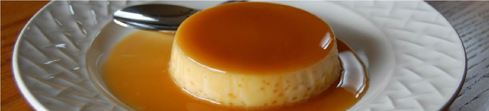

Caramel Flan

Ingredients
- 1 1/2 cups (sugar divided)
- 6 large eggs (room temperature)
- 1 (14-ounce) can sweetened condensed milk
- 2 (13-ounce) cans evaporated milk
- 1 teaspoon vanilla extract
- Total: 80 mins
- Prep: 20 mins
- Cook: 60 mins
- Refrigerate: 60 mins
- Servings: 12 servings
Steps
1
Gather all ingredients and preheat the oven to 325F. Heat a kettle or pot of water bath.
2
Constantly stir the sugar while it heats until it browns and turns into caramel—that is, becomes a brown liquid. Do not overcook since the caramel will burn.
3
Immediately, and quickly, pour approximately 2 to 3 tablespoons of caramel in each of the 12 individual custard dishes or ramekins, tilting them so the caramel swirls around on the inside. Work quickly, as the caramel will cool and harden almost as soon as it hits the dish. Reheat the caramel in the pan if it thickens too much to work with.
4
In an electric mixer or with a whisk, blend the eggs. Add the sweetened condensed milk and evaporated milk, then mix. Slowly mix in the remaining 1/2 cup of sugar while beating, then the vanilla. Blend until smooth after each ingredient is added.
5
Pour the custard mixture into the caramel-lined dishes, distributing it equally. Place the individual dishes in a large ceramic or metal baking pan with sides. Carefully pour hot water into the baking pan around the custard dishes to a depth of about 2 inches.
6
Cover the pan with foil and bake the flan for 45 minutes to an hour in the water bath. Check with a knife inserted just off-center into one of the servings; if the knife comes out clean, the flan is ready.
7
Remove the large baking dish from the oven and carefully take the individual dishes out of the hot water. Let cool to room temperature, then place in the refrigerator for at least an hour before serving. Leave flan in the dishes they baked in until time to serve.